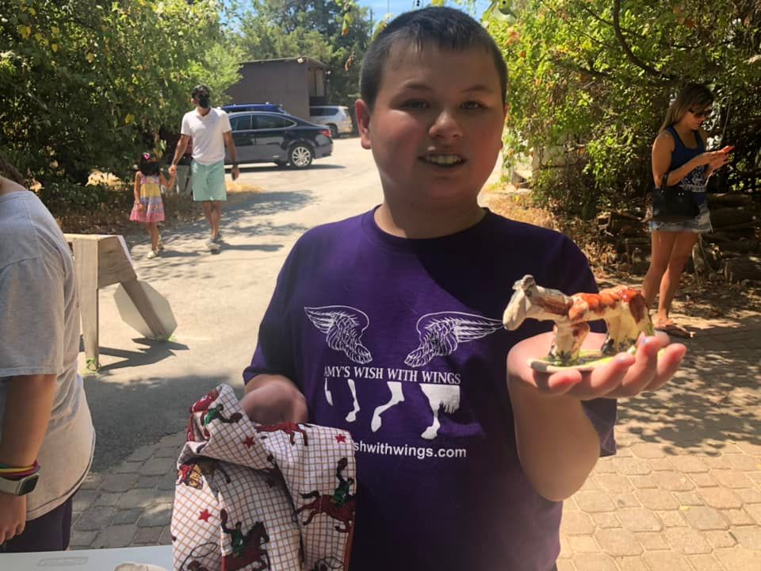

Amy's Wish Club
For Riders with Diverse Needs
We are a PATH Center that offers equine adaptive riding for children who experience restricted participation in life situations. Our program (EAS) Equine Assisted Services also known as Therapeutic Horsemanship, is designed to teach horsemanship and riding skills to individuals with diverse abilities. Our goal is to increase functional life skills, improve balance, posture, mobility and function. EAS is provided by PATH International certified therapeutic riding Instructors, wonderful volunteers and our beloved horses.
Who Benefits?
Children who can benefit from Equine Assisted Services (EAS): Attention deficit disorder, learning disabilities, down syndrome, developmental delay, brain injuries, cerebral palsy, stroke, hearing & vision impairment, balance issues, selective mutism and autism. Potential benefits may include physical fitness and improved cognitive, emotional, social, or behavioral skills. Some see increases in self-esteem, increased balance, motor control and coordination. Improvement in social skills, behavior skills and overall increased emotional well-being.
Interested?
Call or text 817-999-8332 and schedule an appointment to visit our facility to see if we are the right fit for you and your child. Download the forms below, then email or bring in person. Participants must meet the weight guidelines of under 150 lbs. for our horses.